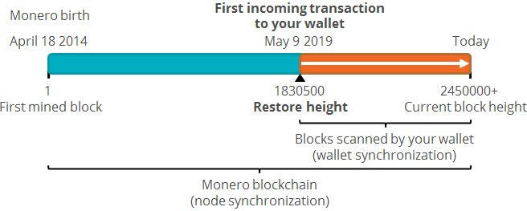
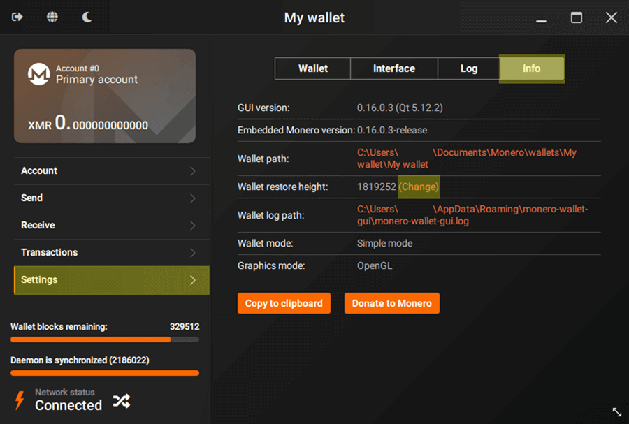
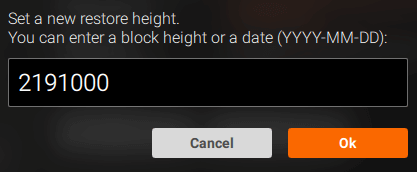
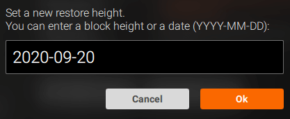
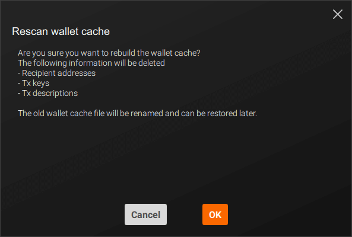

How to change the wallet restore height
Table of contents
- What is the wallet restore height?
- Why Monero wallets have a restore height?
- What happens if I set a wrong restore height?
- How to change the wallet restore height on Monero GUI
- My wallet is showing a wrong balance after changing the restore height
What is the wallet restore height?
The wallet restore height is a setting that tells the wallet software from which block it should start scanning the blockchain when looking for transactions, a process that is known as wallet synchronization. Ideally it should be the number of the block which included the first incoming transaction to your wallet.
Why Monero wallets have a restore height?
Unlike most cryptocurrencies, all transactions included in the Monero blockchain are encrypted. Therefore, your wallet software has to use its private view key to locate the transactions destined for you on the blockchain. The process of scanning the Monero blockchain looking for transactions is known as wallet synchronization and it demands a lot of computing resources.
Setting a restore height makes your wallet synchronization faster, because the wallet software will not start the blockchain scanning at the beginning of Monero (April 2014), but at the time of the restore height.

What happens if I set a wrong restore height?
If you set a restore height higher than the block height of your first incoming transaction, your wallet software will not detect all transactions of your wallet. In consequence, your balance will be wrong and your wallet software will not work properly.
If you set a restore height lower than the block height of your first incoming transaction, your wallet software will scan unnecessary blocks. In consequence, your initial wallet synchronization will take longer than necessary, but your wallet software will still work.
Therefore, if you're unsure about the block height of your first incoming transaction, it's always better to set a lower restore height instead of a higher one.
How to change the wallet restore height on Monero GUI
1) Go to Settings > Info page. On Wallet restore height:, click on (Change).

2) Next, enter your new restore height, which should be the number of the block in which your first incoming transaction was included. If you have the transaction ID (txid) of the first incoming transaction, you can enter it in a block explorer to check in which block it was included.

If you don't know the block number of the first incoming transaction to your wallet, you can enter its date or an estimated date (YYYY-MM-DD format).

Click on Ok button to continue.
3) Next, a dialog window will appear informing that your current wallet cache will clear all information stored about recipient addresses, transaction keys, and transaction descriptions.
But don't worry, you will not lose any important information. Your current wallet cache will be stored as a backup file in the same folder of your wallet and can be restored later.
Click on Ok button to continue.

4) Your wallet will now start a new wallet synchronization, rescanning the blockchain starting from the new restore height*.
Your wallet balance should be correct after the wallet synchronization is completed.
*If your wallet is connected to a local node that is not yet synchronized, you will have to wait for the node synchronization to finish.
My wallet balance is wrong after changing the restore height
This problem usually occurs when you set a restore height that is higher than the block height of the first incoming transaction to your wallet. To solve this issue, change the wallet restore height again using a lower restore height.